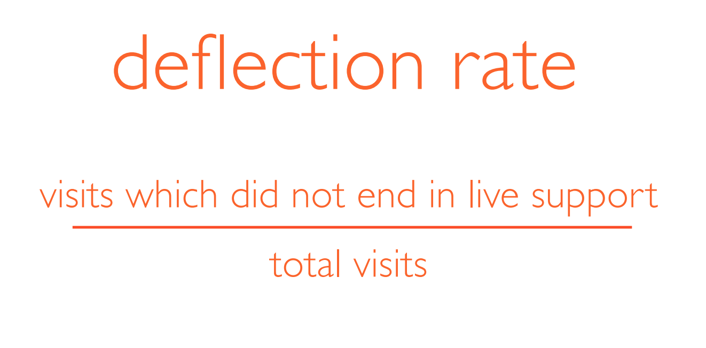
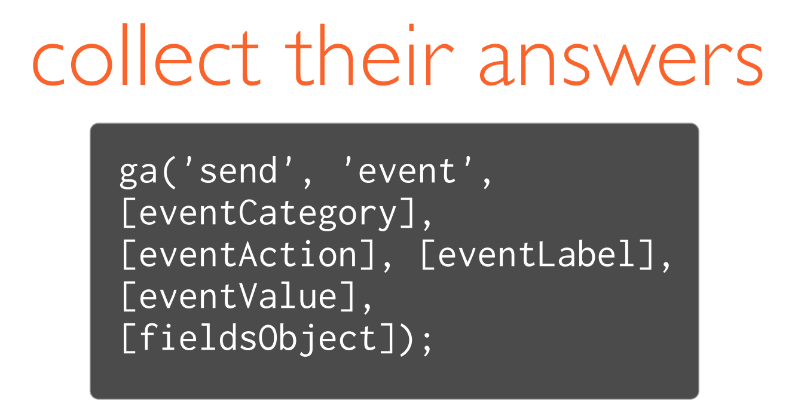
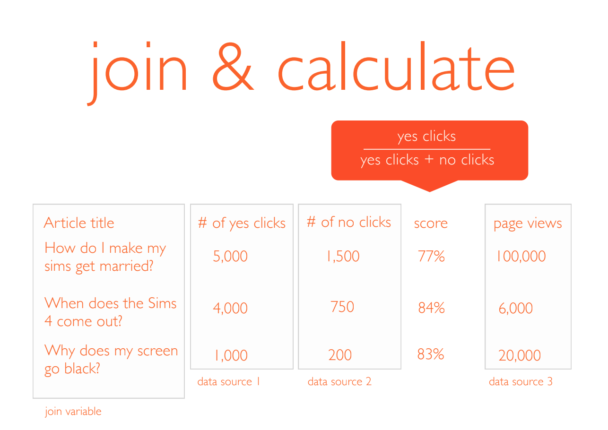
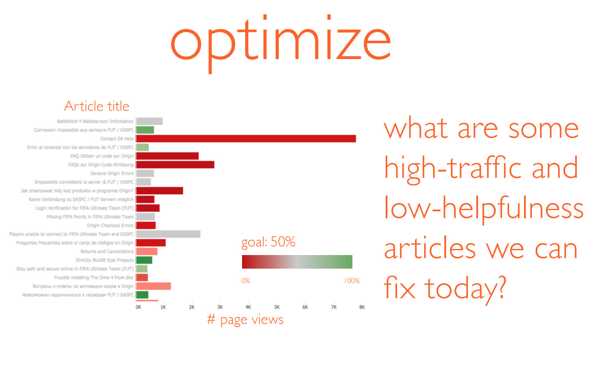
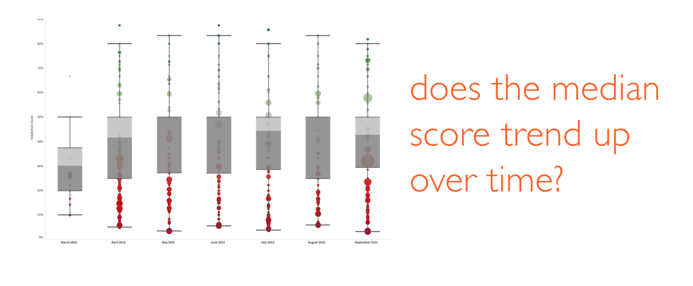
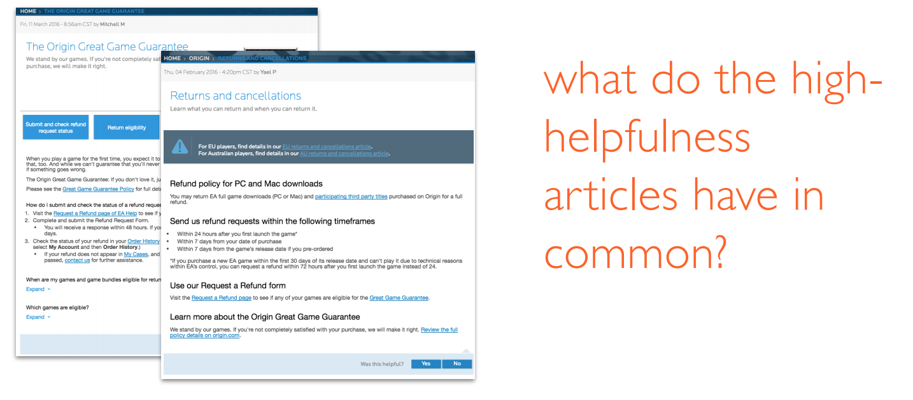
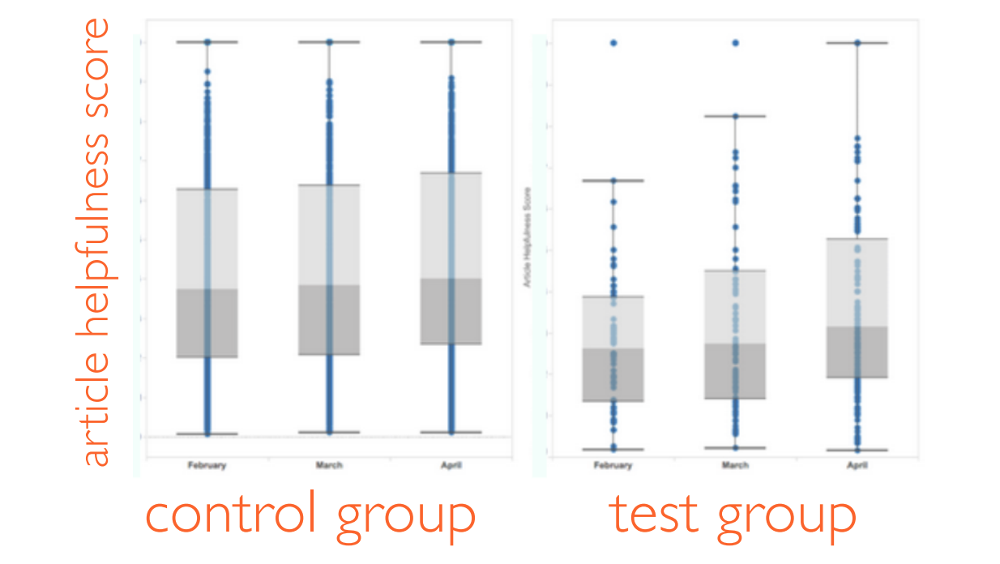

If you are a gamer, you know that when you run into an issue, you’ll likely google the problem you’re having to see if there’s a quick fix. You’ll click on a google result, and read a support article, which will hopefully solve your problem. This is a great experience. If the problem is not solved, you’ll have to hunt through the website for the contact us portal, answer all these questions about your problem, select options for connecting with an agent, possibly wait up to 24 hours, and finally, connect with an agent for live support.
The ideal experience for the gamer is to solve the problem with great information online. So in order to measure our success, we used a metric called “deflection rate”.
We wanted to be able to tie the click to the rest of the user’s visit, so we implemented tracking through Google Analytics.
 We were able to use the number of clicks to derive a “helpfulness score” for each article on the EA support site. We joined that with another data source to determine the volume of users hitting those articles, in order to determine which ones to focus on.
I built a dashboard on Tableau for the content team, so that they could see which articles are the big, bad ones, and also report on how their efforts are impacting the bottom line over time.
The UX designers were also then able to analyze articles by their helpfulness scores, and form some hypotheses about what makes them better or worse.
We implemented a feature in the CMS called “content templates” on a few of the articles in the help center. We wanted to know whether the article helpfulness score went up on the articles that used content templates, so we segmented the helpfulness scores on the articles without content templates, and with.
The article helpfulness score in the test group improved at a higher rate than the control group. This meant that the content templates, as a whole, were succeeding and continuing to implement them across the help center was a good idea. Good job, design team!
As of 2018, this dashboard still exists as a starting point for the content team to measure the success of their help articles.
I really liked this project because we were able to use the outcome in both a generative and evaluative way. On the generative side, this research gave the content team an understanding of what the problem areas on the site were. On the evaluative side, it was a great way to help validate whether to continue down the path of content templates. It was a great reminder that you can and should keep asking data new questions, and not limit yourself to what you set out to learn.